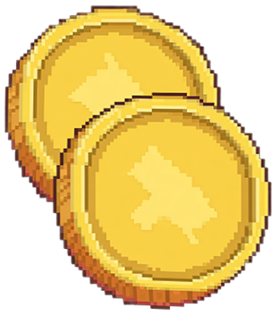

Fark! is a dice game played against NPC rivals. Roll 6 dice, pick the ones that score, then decide: BANK your points safely, or ROLL the remaining dice for more. First to reach the target score wins.
Bust
If none of your dice score after a roll, you bust — all turn points are lost and your turn ends.
Hot Dice
If all 6 dice score in a single roll, you get Hot Dice — re-roll all 6 and keep your turn points. A full straight (1–6) always triggers Hot Dice.
Your turn flow
1. Roll all available dice2. Tap scoring dice to select them3. Press ROLL to roll remaining dice, or BANK to keep your points4. If you bust, you lose all unbanked turn points
Rivals & turns
You and your rival take alternating turns. Watch their dice at the top of the screen. The NPC plays with its own strategy — some are aggressive, some cautious.
Score carryover
Score 70%+ of the target and lose? A portion carries over as a head start next time you face that rival.
Singles
100 pts
50 pts
Triples & beyond
1,000 pts
200 pts
300 pts
400 pts
500 pts
600 pts
Each die beyond the 3rd doubles the value — so four 2s = 400 pts, five = 800 pts, six = 1,600 pts.
Straights (single throw only)
500 pts 1–5
750 pts 2–6
1,500 pts + Hot Dice
Cannot be built across multiple rolls.
Passive cards
Most cards are passive — their effects trigger automatically during play. Equip up to 3 cards before each match (more with renown perks).
Active cards
Drag an active card into the activation zone during your turn to trigger its effect. Active cards have limited uses per match — check the counter on the card.
Card rarities
Tin — starter cards, common effectsSilver — stronger effects, found at higher tiersGold — rare and powerful, boss rewards and high-tier drops
NPC cards
Your rival also has cards. Tap their cards at the top of the screen to see what they do. Boss NPCs have unique signature abilities.
Dice types
Different dice have different face biases. Heavier materials roll more scoring faces but cost more gold. Buy new dice at the Shop. Your loadout of 6 dice is set before each match.
Tarnish
Cards show cosmetic wear over time. Battle scars — they still work, they just look rougher.
The gauntlet
Climb through 8 tiers, each with patron rivals and a boss. Win matches against patrons to earn tier points. Collect enough and the boss fight unlocks. Beat the boss to advance.
Match types
Standard — earn 1 tier point on winHandicap — special rules, earn 2 tier points on win
Handicap modes
Last Call — target score drops each turn you bankSudden Death — 3 turns each, highest score winsRising Stakes — consecutive banks multiply your pointsBounty Board — complete side challenges for bonus goldMirror Match — you swap loadouts with your rival
Gold from matches
Patron win — 5g + 5g per tier (Tier 1 pays 10g, Tier 8 pays 45g)Handicap match — doubles the patron payoutBoss win — a much larger purse, set per bossBounties — 600–1,000g each on Bounty Board matches
The Shop
Open the Shop from the Gauntlet bottom nav between matches. Drag a die from the rack into your loadout to buy and equip it in one motion — the displaced die is sold back automatically.
⭐
FarK!
0g
YOUR LOADOUT
PICK A MATCH
STANDARD
HANDICAP
CHALLENGE BOSS
MENU

SHOP
FarK!
0
Drag a die to your loadout to buy it
MENU
BACK
CHOOSE A CARD
Pick one for your loadout, or skip.
YOUR CARDS
SKIP
BOSS DEFEATED!
CHOOSE A SIGNATURE CARD
YOUR NEW DICE
KEEP
REROLL
CONTINUE
FarK!
🪙 320
YOU
0
TARGET
3500
TURN 1
DRUNKARD ⚡
0
"Welcome to the table, stranger."
ACTIVATE
YIELD
✕
ROLL
BANK
BUST!
YOUR TURN
HOT DICE
FEAT UNLOCKED
—
+0 RENOWN
VICTORY
0
YOU
vs
0
OPP
Flee?
You will lose your buy-in and the match will count as a loss.